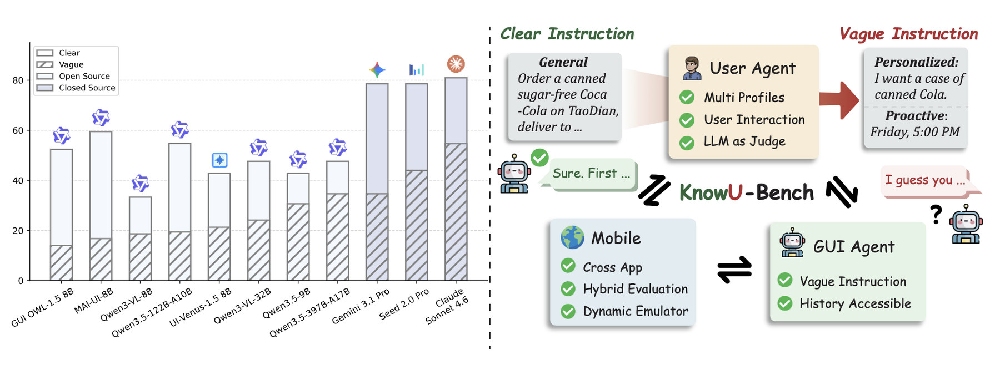
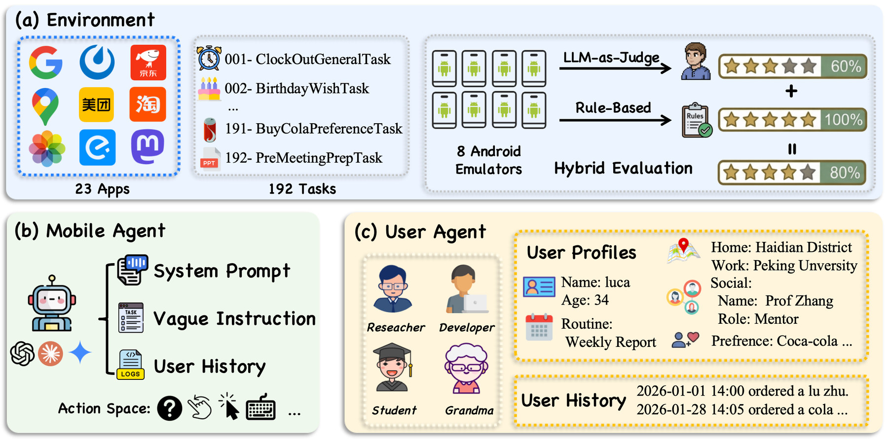
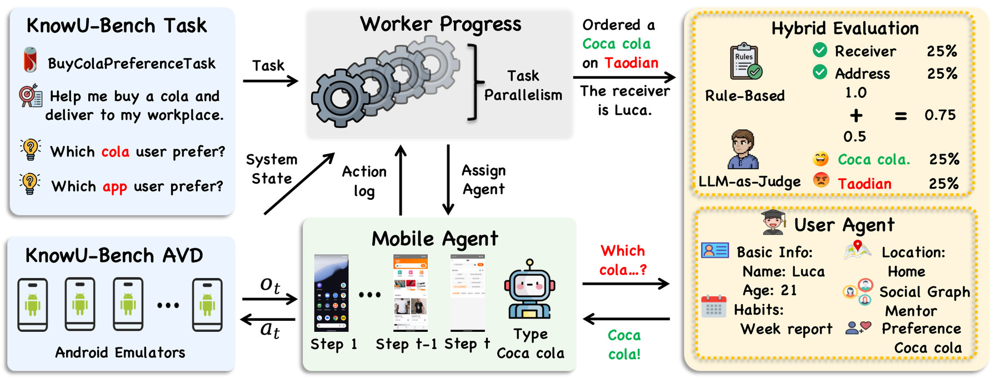
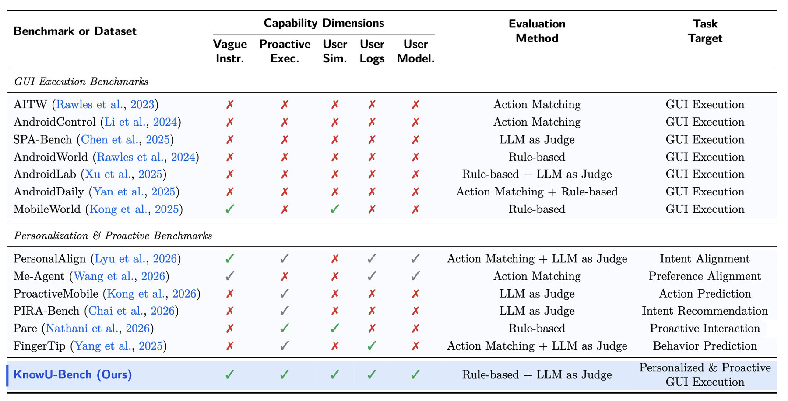

Explicit instructions that need no user-specific reasoning — a baseline for grounded GUI execution.
“Check my Mastodon timeline for a post related to AI or machine learning, and forward it to the ‘Town Square’ channel on Mattermost.”
Mobile agent benchmark · arXiv 2604.08455 · April 2026
Towards Interactive, Proactive, and Personalized Mobile Agent Evaluation
1Zhejiang University 2Apple 3Tencent
*Equal contribution†Corresponding authors
Mobile GUI agents can now follow explicit instructions well. The harder question is whether an agent can act on your behalf as if it truly understands you.
KnowU-Bench is an online, interactive benchmark for personalized and proactive mobile agents, built on a reproducible Android emulation environment. It evaluates three capabilities that existing benchmarks leave out: inferring user preferences from behavioral history, eliciting missing preferences through multi-turn interaction, and deciding when to intervene, seek consent, or remain silent.
The user profile is hidden from the agent; only timestamped behavioral logs are exposed. An LLM-driven user simulator grounded in structured personas answers clarifying questions and accepts or rejects proactive offers. The full proactive decision chain is scored with programmatic verification plus LLM-as-a-Judge.

One example per task family. The agent works on a live Android emulator; the user simulator holds the hidden profile; the evaluator checks the device state and, where preferences matter, asks an LLM judge.
Tasks, user profiles, log lines and scoring rules are taken from the released benchmark (BuyColaGeneralTask, BuyColaPreferenceTask, WeekendSleeperTask; the general instruction is translated from Chinese). Agent questions, user replies, screens and judge sub-scores are illustrative.

Explicit instructions that need no user-specific reasoning — a baseline for grounded GUI execution.
“Check my Mastodon timeline for a post related to AI or machine learning, and forward it to the ‘Town Square’ channel on Mattermost.”
Ambiguous requests resolved against the hidden profile, either from the exposed logs or by asking the simulated user (ask_user).
“I am short on time at noon. Please order me a light lunch on a reasonable budget.”
No instruction at all: given time, place and device state, the agent executes, proposes and waits for consent, or stays silent. Each template runs for all four roles.
“Based on this context, decide whether to ask first, execute autonomously, or remain silent and continue monitoring.”
A rule-based judge inspects verifiable state — recipients, created orders or events, alarm and setting values, time windows, and unsafe actions after a user rejection. A rubric-conditioned LLM judge scores semantic criteria such as preference alignment, trade-off quality, communication style and clarification quality.
Si = λi · Srule + (1 − λi) · Sllm
λ = 1 for fully deterministic tasks, 0 for purely semantic ones; for personalized tasks it follows the share of preference-dependent requirements. A task counts as a success when S > 0.99. On 26 trajectories rated by four human experts, the hybrid judge tracks human scores more closely than the rule-only variant.
ask_user query
Each profile is a YAML file with identity, locations, digital context, habits, preferences, decision criteria and a social graph. The agent never reads it — it gets the user's timestamped log (a clean version and one with about 25% injected noise), formatted as [time] (location) action.
Aiden Lin, 34 · associate professor, AI lab director
user
Kenji Sato, 30 · senior DevOps engineer / SRE
developer
Lucas Jensen, 19 · CS sophomore
student
Wang Shulan, 68 · retired textile worker
grandma
The same request can have different right answers. “Buy a case of my favorite cola” means sugar-free Coca-Cola for the researcher and full-sugar Coca-Cola for the student, and a Friday-night alarm should be switched off for one user but left alone for another. In the paper, Claude Sonnet 4.6 stays within 71.7–79.4% average score across the four roles, while Seed 2.0 Pro ranges from 71.3% (researcher) to 48.5% (grandma). Grandma is the hardest role on average.
Success rate (%) on 42 general, 86 personalized and 64 proactive tasks, max 50 steps, full noisy user logs. Untick a family to re-rank on the remaining tasks — Overall then becomes the task-weighted average of the selected families. To submit results, contact us.
| Rank | Type | Model | ||||
|---|---|---|---|---|---|---|
| Loading leaderboard… | ||||||
Data: leaderboard.json. The paper (Table 2) additionally reports MAI-UI-8B, GUI-Owl-1.5-8B and Qwen3.5-122B-A10B, with easy/hard splits and personalized average scores.
Agents that excel at explicit GUI execution degrade substantially once success depends on knowing the user or deciding whether to act at all.
MAI-UI-8B and Seed 2.0 Pro both reach 100.0% on the easy general split, but strong models drop by about 30% on average once success depends on personalization or proactivity. On the hard personalized split Claude Sonnet 4.6 reaches 44.2%; every open-source model stays below 12%. The best overall success rate is 60.4% (Claude Sonnet 4.6).
Asking more is not asking better: Claude Sonnet 4.6 reaches a 44.2% success rate and 78.9% average score while asking only 0.4 questions per task; Seed 2.0 Pro asks about twice as many and still trails. Failure modes of Claude Sonnet 4.6 on personalized tasks:
No model is best at acting, staying silent and backing off at once. Claude Sonnet 4.6 has the best Act rate (70.8%); Qwen3.5-397B-A17B leads Silent (73.7%) and reaches 75.0% Stop but only 31.8% Act; Qwen3.5-122B-A10B has the best Stop (83.3%). Failure modes of Claude Sonnet 4.6 on proactive tasks:
Overall success rate on personalized and proactive tasks under four memory settings. The best interface depends on the model.
| Model | Full log | RAG log | ||
|---|---|---|---|---|
| Clean | Noisy | Clean | Noisy | |
| MAI-UI-8B | 11.1 | 13.6 | 12.3 | 9.3 |
| Qwen3-VL-8B | 13.6 | 17.2 | 20.4 | 19.8 |
| UI-Venus-1.5-8B | 15.6 | 20.3 | 13.7 | 19.6 |
GUI benchmarks test execution on explicit goals; personalization and proactive benchmarks mostly evaluate offline. KnowU-Bench is the only one in this comparison that covers vague instructions, proactive execution, user simulation, user logs and user modeling, with grounded GUI execution.

Needs a Linux host with Docker and KVM, Python 3.12 and uv. The default environment image is ghcr.io/yaosqz/knowu-bench:latest.
git clone https://github.com/ZJU-REAL/KnowU-Bench.git
cd KnowU-Bench
uv sync
cp .env.example .env # API_KEY, USER_AGENT_* for the simulator
docker pull ghcr.io/yaosqz/knowu-bench:latestuv run mw env check
uv run mw env run --count 4 --launch-interval 15
uv run mw info task --no-pageruv run mw eval \
--agent-type qwen3.5 --task ALL \
--task-tags routine,preference,general \
--model-name your-model-name \
--llm-base-url https://your-openai-compatible-endpoint/v1 \
--api-key "$API_KEY" --max-round 50 --max-concurrency 4 \
--log-file-root traj_logs/my_run --enable-user-interaction
uv run mw logs view --log-dir traj_logs/my_runThe CLI uses the code-level tags general, preference (personalized) and routine (proactive). Add --user student to restrict to one persona, --user-log-mode rag for retrieved log snippets, or --user-log-source noise for noisy histories. Built-in agents include qwen3.5, qwen3vl, gui_owl_1_5, mai_ui_agent, ui_venus_agent, seed_agent and more.
@misc{chen2026knowubench,
title={KnowU-Bench: Towards Interactive, Proactive, and Personalized Mobile Agent Evaluation},
author={Tongbo Chen and Zhengxi Lu and Zhan Xu and Guocheng Shao and Shaohan Zhao and Fei Tang and Yong Du and Kaitao Song and Yizhou Liu and Yuchen Yan and Wenqi Zhang and Xu Tan and Weiming Lu and Jun Xiao and Yueting Zhuang and Yongliang Shen},
year={2026},
eprint={2604.08455},
archivePrefix={arXiv},
primaryClass={cs.AI},
url={https://arxiv.org/abs/2604.08455},
}
@article{liu2026memubench,
title = {MemU-Bench: Benchmarking GUI Agents on Long-Horizon User Interactions},
author = {Liu, Yizhou and Lu, Zhengxi and Tang, Fei and Qiu, Yiwen and Du, Yong and Chen, Tongbo and Chen, Bofan and Jiang, Tao and Xu, Wenhao and Shu, Yunfeng and Zhang, Wenqi and Lu, Weiming and Xiao, Jun and Zhuang, Yueting and Shen, Yongliang},
journal = {arXiv preprint arXiv:2611.00191},
year = {2026}
}